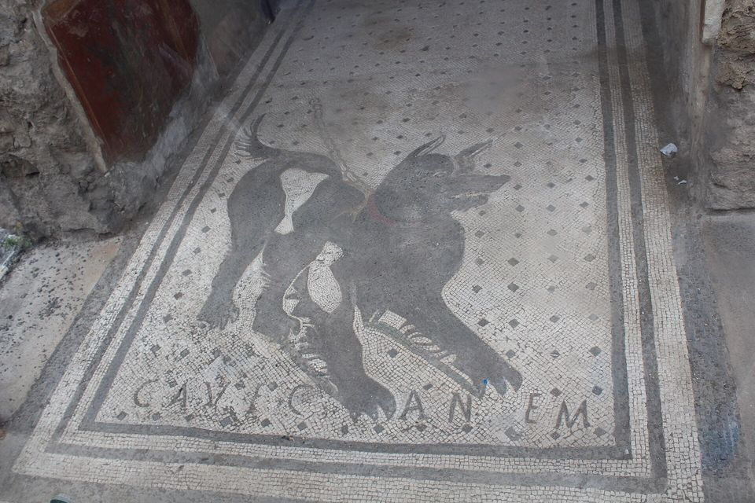
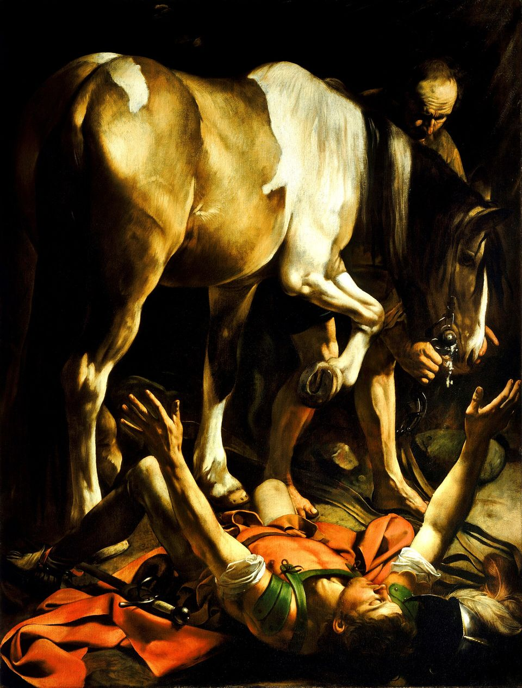

Parada 6 · Para ir mais fundo
Sentinelas na muralha
Lição 6Três vezes seguidas, Paulo grita como um vigia: "Guardai-vos!" E depois mostra o que vale mais do que tudo o que ele tinha
Sete postos
Filipos era cercada por muralhas, e no alto delas havia sentinelas. Esta página é uma ronda por sete postos de vigia: os quatro primeiros mostram o perigo; os três últimos, a defesa.
Depois de falar de servos fiéis (lição 5), Paulo fala de obreiros que não eram fiéis, e responde a eles com o próprio testemunho: o que ele tinha, o que largou e Quem ganhou.
Baseado na Lição 6 da revista Lições Bíblicas Jovens (CPAD), com textos bíblicos da ARC.
Slides da aulaA mesma ronda em 25 slides para projetar, com notas do professor.
Abrir os slidesPosto 1 · A muralha · o cenário
A muralha e o vigia
Filipos nasceu como fortaleza. Depois de tomar a cidade, em 356 a.C., Filipe II da Macedônia, pai de Alexandre, deu-lhe o próprio nome e a cercou de muralhas que fechavam a passagem entre o pântano e o monte e subiam até a acrópole, o ponto mais alto. Quando Filipos virou colônia romana, manteve as muralhas macedônias; elas ainda estavam de pé quando Paulo chegou. Séculos depois foram reconstruídas mais de uma vez: no século V, quando resistiram a um cerco de tropas ostrogodas (473), e por volta de 969, pelo imperador Nicéforo II Focas.
Mas muralha nenhuma protege sozinha. Em cima dela, alguém precisa olhar para longe, ver o perigo chegando e dar o alarme. Na Bíblia, esse é o atalaia:
Ezequiel 33.6 · ARC
Mas, se, quando o atalaia vir que vem a espada, não tocar a trombeta, e não for avisado o povo; se a espada vier e levar uma vida dentre eles, este tal foi levado na sua iniquidade, mas o seu sangue demandarei da mão do atalaia.
Em Fp 3.1, Paulo se coloca nesse lugar. Ele começa com alegria ("regozijai-vos no Senhor") e logo emenda: "Não me aborreço de escrever-vos as mesmas coisas, e é segurança para vós". A palavra é asphalḗs: firme, que não escorrega. Repetir um alerta não é chatice; é cuidado. Na reconstrução de Jerusalém, Neemias pôs o povo para fazer as duas coisas ao mesmo tempo:
Neemias 4.17 · ARC
Os que edificavam o muro, e os que traziam as cargas, e os que carregavam, cada um com uma mão fazia a obra e na outra tinha as armas.
Fontes: Wikipedia (inglês), "Philippi" · Bíblia Sagrada, Almeida Revista e Corrigida (ARC). Sociedade Bíblica do Brasil.
Posto 2 · Lobos com pele de ovelha · na história
Lobos com pele de ovelha
A revista começa com uma constatação dura: maus obreiros sempre existiram, "em maior ou menor número, aqui ou acolá" (Introdução). Paulo já tinha falado na carta de quem pregava a Cristo "por inveja e porfia" (Fp 1.15 a 17). Agora o problema é outro: gente que distorcia a própria mensagem da salvação.
| Quando | Quem | Texto |
|---|---|---|
| No deserto | Nadabe e Abiú, filhos de Arão, oferecem "fogo estranho" | Lv 10.1 e 2 |
| Em Siló | Os filhos de Eli, sacerdotes que "não conheciam o Senhor" | 1Sm 2.12 a 17 |
| Nos dias de Samuel | Os filhos do profeta, que aceitavam suborno | 1Sm 8.3 |
| No tempo de Jesus | Falsos profetas "vestidos como ovelhas"; e Judas, dentro do grupo | Mt 7.15; Jo 12.6 |
| Na igreja | Alexandre, o latoeiro; Demas, que "amou o presente século" | 2Tm 4.10 e 14 |
Mateus 7.15 e 16 · ARC
Acautelai-vos, porém, dos falsos profetas, que vêm até vós vestidos como ovelhas, mas interiormente são lobos devoradores. Por seus frutos os conhecereis.
Atos 20.29 e 30 · ARC
Porque eu sei isto: que, depois da minha partida, entrarão no meio de vós lobos cruéis, que não perdoarão o rebanho. E que, dentre vós mesmos, se levantarão homens que falarão coisas perversas, para atraírem os discípulos após si.
Discernimento, não desconfiança
A revista faz questão de equilibrar: o objetivo de Paulo "não era gerar medo ou desconfiança generalizada, mas despertar discernimento espiritual para que os crentes permanecessem firmados na Palavra de Deus" (Interação). Ele mesmo explicou a Timóteo que "numa grande casa não somente há vasos de ouro e de prata, mas também de pau e de barro" (2Tm 2.20), e deu o sinal de alerta: "tendo aparência de piedade, mas negando a eficácia dela. Destes afasta-te" (2Tm 3.5).
Por que Deus, por vezes, permite que surjam maus obreiros? A revista admite que isso "constitui-se numa grande incógnita. Até Jesus teve que suportar Judas Iscariotes" (Ponto importante).
Fontes: Bíblia Sagrada, Almeida Revista e Corrigida (ARC). Sociedade Bíblica do Brasil. · Lições Bíblicas Jovens, 4º trimestre de 2026, Lição 6
Posto 3 · Guardai-vos! · Fp 3.1 e 2
Guardai-vos!
Texto principal da lição · Filipenses 3.1 e 2 · ARC
Resta, irmãos meus, que vos regozijeis no Senhor. Não me aborreço de escrever-vos as mesmas coisas, e é segurança para vós. Guardai-vos dos cães, guardai-vos dos maus obreiros, guardai-vos da circuncisão!
"Guardai-vos" traduz blépete, "olhai, prestai atenção". Paulo repete três vezes, como uma sentinela gritando do alto da muralha. E em grego os três alvos ainda começam com o mesmo som: tous kýnas, tous kakoùs ergátas, tēn katatomḗn. Não dava para esquecer.
Os cães

No mundo antigo, cão não era bicho de estimação da família. Os cães de rua viviam do lixo, e por isso "eram normalmente detestados pela sociedade greco-romana e considerados impuros pelos judeus, que, por vezes, designavam o termo para os gentios" (revista, II.1). Paulo vira a ofensa do avesso: impuros são justamente os que queriam "purificar" os gentios pela carne. O Apocalipse usa a mesma imagem para quem fica de fora da cidade de Deus:
Apocalipse 22.15 · ARC
Ficarão de fora os cães e os feiticeiros, e os que se prostituem, e os homicidas, e os idólatras, e qualquer que ama e comete a mentira.
Os maus obreiros
"Obreiro" (ergátēs) era a palavra de Jesus para quem trabalha na seara (Mt 9.37 e 38). Esses trabalhavam muito, mas para o mal. A revista lembra que a NVI traduz "cuidado com os que praticam o mal" (II.2). Paulo descreveu gente parecida em Corinto:
2 Coríntios 11.13 e 14 · ARC
Porque tais falsos apóstolos são obreiros fraudulentos, transfigurando-se em apóstolos de Cristo. E não é maravilha, porque o próprio Satanás se transfigura em anjo de luz.
Circuncisão ou mutilação?
O terceiro alerta tem um jogo de palavras. A circuncisão é peritomḗ, "cortar ao redor". Paulo não usa essa palavra: usa katatomḗ, "cortar em pedaços", mutilação, que só aparece aqui no Novo Testamento. O que esses mestres ensinavam está em Atos:
Atos 15.1 · ARC
Então, alguns que tinham descido da Judeia ensinavam assim os irmãos: Se vos não circuncidardes, conforme o uso de Moisés, não podeis salvar-vos.
Um cuidado importante. Paulo não está atacando o povo judeu, nem o rito dado a Abraão. Ele mesmo era judeu e se orgulhava disso: "também eu sou israelita, da descendência de Abraão, da tribo de Benjamim" (Rm 11.1). O problema era transformar um corte no corpo em condição para ser salvo. A Bíblia de Estudo Pentecostal, citada no Subsídio, diz que esses ensinadores "tinham distorcido de tal forma o significado e o propósito do antigo sinal da aliança da circuncisão que a prática havia se tornado nada mais do que um corte inútil no corpo".
Fontes: Concordância de Strong, G991 blépō · Concordância de Strong, G2965 kýōn · Concordância de Strong, G2040 ergátēs · Concordância de Strong, G2699 katatomḗ · Wikipedia (inglês), "House of the Tragic Poet" · Bíblia de Estudo Pentecostal, Edição Global · Bíblia Sagrada, Almeida Revista e Corrigida (ARC). Sociedade Bíblica do Brasil. · Lições Bíblicas Jovens, 4º trimestre de 2026, Lição 6
Posto 4 · Agradam, seduzem, destroem · as falsas doutrinas
Agradam, seduzem, destroem
O tópico III da revista abre com um versículo de Gálatas que resume o perigo:
Leitura de segunda-feira · Gálatas 5.9 · ARC
Um pouco de fermento leveda toda a massa.
Não é preciso muito erro para estragar muita coisa. A revista descreve três movimentos das falsas doutrinas:
Agradam
Os ouvintes, "tendo comichão nos ouvidos, amontoarão para si doutores conforme as suas próprias concupiscências". O falso mestre ameniza o "negar-se a si mesmo e tomar sua cruz", acrescenta autoajuda e promete "um bem-estar sem precedentes, o pacote completo do autoengano".
Seduzem
Apoiam-se no carisma ("não caráter") de quem fala e em promessas vantajosas e irreais, como a da serpente: "sereis como Deus". Como diziam os antigos pastores, "vêm com sapatinhos de lã", sem fazer barulho.
Destroem
"Transtornam casas inteiras, ensinando o que não convém, por torpe ganância." "Transtornam" é anatrépō: virar de cabeça para baixo, derrubar. Não atinge só uma pessoa, mas "produz uma enxurrada com potencial de destruir toda a família".
"Os seguidores de Jesus dos dias de hoje devem estar cientes de que, dentro das igrejas, poderá haver ministros e líderes que preguem e ensinem a Palavra de Deus e sejam como os corruptos doutores da lei de Deus dos tempos de Jesus."
Bíblia de Estudo Pentecostal, Edição Global, CPAD, p. 1737 (Subsídio da revista)
Como se proteger
A Bíblia não manda desconfiar de tudo: manda examinar. Em Bereia, os ouvintes conferiram na Escritura até a pregação de Paulo, e Lucas os chama de "mais nobres":
Atos 17.11 · ARC
Ora, estes foram mais nobres do que os que estavam em Tessalônica, porque de bom grado receberam a palavra, examinando cada dia nas Escrituras se estas coisas eram assim.
1 João 4.1 · ARC
Amados, não creiais em todo espírito, mas provai se os espíritos são de Deus, porque já muitos falsos profetas se têm levantado no mundo.
As perguntas da Orientação Pedagógica: Tenho o hábito de conferir tudo o que ouço à luz da Bíblia? Minha fé está fundamentada em experiências ou na Palavra de Deus? Tenho buscado crescimento espiritual pela oração e pelo estudo bíblico? Consigo identificar quando uma mensagem contradiz os princípios das Escrituras?
Fontes: Concordância de Strong, G396 anatrépō · Bíblia de Estudo Pentecostal, Edição Global · Bíblia Sagrada, Almeida Revista e Corrigida (ARC). Sociedade Bíblica do Brasil. · Lições Bíblicas Jovens, 4º trimestre de 2026, Lição 6
Posto 5 · A verdadeira circuncisão · Fp 3.3
A verdadeira circuncisão
Filipenses 3.3 · ARC
Porque a circuncisão somos nós, que servimos a Deus no Espírito, e nos gloriamos em Jesus Cristo, e não confiamos na carne.
Depois dos três alertas, Paulo dá três marcas de quem pertence de verdade ao povo de Deus:
Servimos a Deus no Espírito
O culto nasce de dentro, movido pelo Espírito Santo, e não de um ritual externo.
Nos gloriamos em Cristo
O motivo de orgulho é Ele, não a nossa origem, os nossos títulos ou o nosso desempenho.
Não confiamos na carne
"Carne" aqui é tudo o que o ser humano pode fazer ou ter por conta própria para se garantir diante de Deus.
E Paulo não inventou a ideia de uma circuncisão do coração. Ela já estava na Lei de Moisés:
Deuteronômio 10.16 · ARC
Circuncidai, pois, o prepúcio do vosso coração e não mais endureçais a vossa cerviz.
Deuteronômio 30.6 · ARC
E o Senhor, teu Deus, circuncidará o teu coração e o coração de tua semente, para amares ao Senhor, teu Deus, com todo o coração e com toda a tua alma, para que vivas.
Romanos 2.28 e 29 · ARC
Porque não é judeu o que o é exteriormente, nem é circuncisão a que o é exteriormente na carne. Mas é judeu o que o é no interior, e circuncisão, a que é do coração, no espírito, não na letra, cujo louvor não provém dos homens, mas de Deus.
Fontes: Bíblia de Estudo Pentecostal, Edição Global · Bíblia Sagrada, Almeida Revista e Corrigida (ARC). Sociedade Bíblica do Brasil. · Lições Bíblicas Jovens, 4º trimestre de 2026, Lição 6
Posto 6 · O balanço de Paulo · Fp 3.4 a 8
O balanço de Paulo

Filipenses 3.4 a 6 · ARC
Ainda que também podia confiar na carne; se algum outro cuida que pode confiar na carne, ainda mais eu: circuncidado ao oitavo dia, da linhagem de Israel, da tribo de Benjamim, hebreu de hebreus; segundo a lei, fui fariseu, segundo o zelo, perseguidor da igreja; segundo a justiça que há na lei, irrepreensível.
Se o assunto é confiar na carne, Paulo tem o melhor currículo da sala. O Subsídio (Elienai Cabral) observa que ele provou "que ele mesmo, muito mais que outros, confiava no judaísmo com suas leis, ritos e dogmas". São sete itens: quatro recebidos ao nascer e três conquistados com esforço.
| Item | Tipo | O que quer dizer |
|---|---|---|
| Circuncidado ao oitavo dia | Herdado | Como manda Gn 17.12. Não era convertido adulto. |
| Da linhagem de Israel | Herdado | Descendente de Jacó, de nascimento. |
| Da tribo de Benjamim | Herdado | A tribo do rei Saul, que deu nome a Saulo. |
| Hebreu de hebreus | Herdado | Família que guardou a língua e os costumes. |
| Fariseu | Conquistado | A "mais severa seita" (At 26.5), aos pés de Gamaliel. |
| Perseguidor da igreja | Conquistado | O zelo levado ao extremo (At 8.3). |
| Irrepreensível na lei | Conquistado | Ninguém podia acusá-lo de faltar a uma regra. |
Alguns detalhes: a circuncisão "ao oitavo dia" seguia Gn 17.12 e o distinguia de quem se convertia já adulto. Benjamim deu a Israel o primeiro rei, Saul (1Sm 9.1 e 2), o mesmo nome hebraico de Paulo. Como fariseu, ele estudou "aos pés de Gamaliel" (At 22.3), e o zelo o levou a assolar a igreja, "entrando pelas casas" (At 8.3). E "irrepreensível" é a mesma palavra de Fp 2.15 (lição 4).
A virada
Filipenses 3.7 e 8 · ARC
Mas o que para mim era ganho reputei-o perda por Cristo. E, na verdade, tenho também por perda todas as coisas, pela excelência do conhecimento de Cristo Jesus, meu Senhor; pelo qual sofri a perda de todas estas coisas e as considero como esterco, para que possa ganhar a Cristo
Paulo fala como quem fecha a contabilidade. Kérdos é "ganho, lucro"; zēmía é "perda, prejuízo", termo de negócios que Lucas usa para o prejuízo do naufrágio (At 27.10 e 21). Tudo o que estava na coluna do lucro foi passado, item por item, para a coluna do prejuízo:
E não é só "perda": é skýbala, "esterco", refugo, restos de comida. Uma explicação antiga liga a palavra ao que se joga aos cães. Repare no fio do capítulo: Paulo chamou os falsos mestres de "cães" (3.2) e agora chama seus próprios méritos de lixo de cachorro. Há ainda uma ironia com Tito 1.11: os falsos mestres ensinavam "por torpe ganância", e a palavra é a mesma, kérdos. Eles corriam atrás do lucro; Paulo jogou o seu fora.
O motivo é "a excelência do conhecimento de Cristo". A palavra é hyperéchon, "o que está acima de tudo", o mesmo verbo da "paz de Deus, que excede todo o entendimento" (Fp 4.7).
Mateus 13.45 e 46 · ARC
Outrossim, o Reino dos céus é semelhante ao homem negociante que busca boas pérolas; e, encontrando uma pérola de grande valor, foi, vendeu tudo quanto tinha e comprou-a.
Fontes: Concordância de Strong, G2771 kérdos · Concordância de Strong, G2209 zēmía · Concordância de Strong, G4657 skýbalon · Concordância de Strong, G5242 hyperéchō · CABRAL, Elienai · Bíblia Sagrada, Almeida Revista e Corrigida (ARC). Sociedade Bíblica do Brasil.
Posto 7 · Conhecê-lo · Fp 3.9 a 11
Conhecê-lo
Filipenses 3.9 · ARC
e seja achado nele, não tendo a minha justiça que vem da lei, mas a que vem pela fé em Cristo, a saber, a justiça que vem de Deus, pela fé;
Duas justiças
Paulo compara duas maneiras de ser justo diante de Deus. A "minha justiça", construída pela lei, era exatamente o currículo do posto anterior. A "justiça que vem de Deus" não se constrói: se recebe, pela fé. É o coração do evangelho que os falsos mestres de Filipos estavam mutilando:
Romanos 1.17 · ARC
Porque nele se descobre a justiça de Deus de fé em fé, como está escrito: Mas o justo viverá da fé.
Gálatas 2.16 · ARC
Sabendo que o homem não é justificado pelas obras da lei, mas pela fé em Jesus Cristo, temos também crido em Jesus Cristo, para sermos justificados pela fé de Cristo e não pelas obras da lei, porquanto pelas obras da lei nenhuma carne será justificada.
Conhecer uma Pessoa
Filipenses 3.10 e 11 · ARC
para conhecê-lo, e a virtude da sua ressurreição, e a comunicação de suas aflições, sendo feito conforme a sua morte; para ver se, de alguma maneira, eu possa chegar à ressurreição dos mortos.
A lista de ganhos de Paulo começou com um currículo e termina com uma Pessoa. "Conhecer", aqui, não é saber coisas sobre Cristo: é intimidade, como em "a vida eterna é esta: que conheçam a ti só por único Deus verdadeiro e a Jesus Cristo, a quem enviaste" (Jo 17.3). Três palavras ligam este trecho às lições anteriores:
koinōnía
"Comunicação de suas aflições" é a mesma palavra da "cooperação no evangelho" (Fp 1.5): comunhão com Cristo até no sofrimento.
symmorphízō
"Sendo feito conforme": tomar a mesma forma. É da família de morphḗ, a "forma de servo" de Fp 2.7.
exanástasis
"Ressurreição dos mortos", literalmente "levantar-se de entre os mortos". A palavra só aparece aqui no Novo Testamento.
A melhor muralha
A Conclusão da revista é firme: "hoje, em dias de relativismo e ecumenismo, muitos cristãos têm dado as mãos a falsos mestres [...] Todavia, a Bíblia sempre advertiu a manter distância dos tais". Paulo (Tt 1.10 e 11) e João (2Jo 10) ensinavam "tolerância zero" com quem distorcia o evangelho. Mas a defesa de Fp 3 não começa pela desconfiança: começa por Cristo. Quem conhece de perto o verdadeiro percebe quando a mensagem muda.
Eu confiro o que ouço pela Bíblia ou só pela empolgação do momento? O desafio da revista para a semana: um tempo diário de leitura bíblica, "fortalecendo sua base bíblica e doutrinária".
Fontes: Concordância de Strong, G4833 symmorphízō · Concordância de Strong, G1815 exanástasis · CABRAL, Elienai · Bíblia Sagrada, Almeida Revista e Corrigida (ARC). Sociedade Bíblica do Brasil. · Lições Bíblicas Jovens, 4º trimestre de 2026, Lição 6
Palavras para entender
- Atalaia
- Sentinela, vigia posto no alto do muro para avisar do perigo (Ez 33.6 e 7).
- Acrópole
- A parte mais alta e fortificada de uma cidade grega.
- Judaizantes
- Mestres que exigiam que os gentios convertidos fossem circuncidados e guardassem a lei de Moisés para serem salvos (At 15.1).
- Katatomḗ
- "Mutilação", em jogo de palavras com peritomḗ, "circuncisão" (Fp 3.2).
- Carne
- Em Fp 3.3 e 4: tudo o que o ser humano tem ou faz por conta própria para se garantir diante de Deus.
- Fariseu
- Membro do grupo judaico mais rigoroso na observância da lei (At 26.5).
- Skýbala
- "Esterco", refugo, restos (Fp 3.8).
- Justiça pela fé
- Ser aceito por Deus não pelos próprios méritos, mas pela fé em Cristo (Rm 1.17; Fp 3.9).
Fontes e referências
De onde vieram os fatos e as citações desta página e dos slides.
- Lições Bíblicas Jovens, 4º trimestre de 2026, Lição 6: "Guardando-se dos falsos mestres". Comentarista: Reynaldo Odilo. Rio de Janeiro: CPAD, 2026.
- Bíblia Sagrada, Almeida Revista e Corrigida (ARC). Sociedade Bíblica do Brasil. Abrir
- CABRAL, Elienai. Filipenses: a humildade de Cristo como exemplo para a igreja. Rio de Janeiro: CPAD, 2013, pp. 92 e 93 (citado no Subsídio da Lição 6).
- Bíblia de Estudo Pentecostal, Edição Global. Rio de Janeiro: CPAD, 2024, pp. 1737 e 2202 (citada nos Subsídios da Lição 6).
- Wikipedia (inglês), "Philippi": as fortificações de Filipe II depois de 356 a.C., mantidas pela colônia romana e reconstruídas nos séculos V e VI e por Nicéforo II Focas (por volta de 969). Abrir
- Wikipedia (inglês), "House of the Tragic Poet": a casa de Pompeia com o mosaico "Cave canem" ("cuidado com o cão") na entrada. Abrir
- Concordância de Strong, G991 blépō: "olhar, prestar atenção"; no imperativo, "cuidado!" (Fp 3.2, três vezes; Mc 13.5). Abrir
- Concordância de Strong, G2965 kýōn: "cão" (Mt 7.6; Fp 3.2; 2Pe 2.22; Ap 22.15). Abrir
- Concordância de Strong, G2040 ergátēs: "trabalhador, obreiro" (Mt 9.37 e 38; 2Co 11.13; Fp 3.2). Abrir
- Concordância de Strong, G2699 katatomḗ: "mutilação, corte em pedaços"; só em Fp 3.2, em jogo de palavras com G4061 peritomḗ, "circuncisão". Abrir
- Concordância de Strong, G396 anatrépō: "virar de cabeça para baixo, derrubar", traduzido "transtornam" (Tt 1.11; 2Tm 2.18). Abrir
- Concordância de Strong, G2771 kérdos: "ganho, lucro" (Fp 1.21; 3.7; Tt 1.11, "torpe ganância"). Abrir
- Concordância de Strong, G2209 zēmía: "perda, prejuízo", termo de negócios; só em At 27.10 e 21 e Fp 3.7 e 8. Abrir
- Concordância de Strong, G4657 skýbalon: "refugo, restos, esterco"; uma explicação antiga liga a palavra ao que se joga aos cães; só em Fp 3.8. Abrir
- Concordância de Strong, G5242 hyperéchō: "estar acima, superar", traduzido "excelência" (Fp 3.8) e "excede" (Fp 4.7). Abrir
- Concordância de Strong, G4833 symmorphízō: "tomar a mesma forma", traduzido "sendo feito conforme" (Fp 3.10), da família de morphḗ (Fp 2.6 e 7). Abrir
- Concordância de Strong, G1815 exanástasis: "ressurreição, levantar-se de entre"; só em Fp 3.11. Abrir
Para continuar
- Filipenses: a humildade de Cristo como exemplo para a igreja, de Elienai Cabral (CPAD, 2013): citado no Subsídio desta lição.
- Bíblia de Estudo Pentecostal, Edição Global (CPAD): citada nos dois Subsídios, sobre Fp 3.2 e sobre os falsos mestres.
- Os vídeos e podcasts desta lição estão na Parada 6.